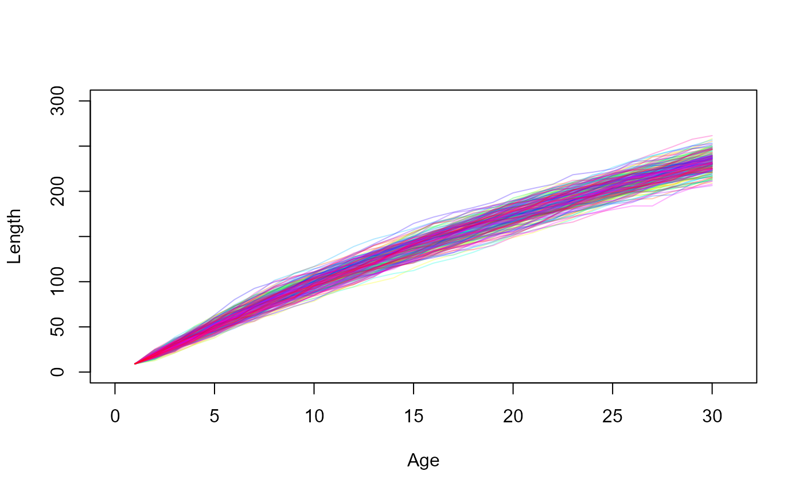
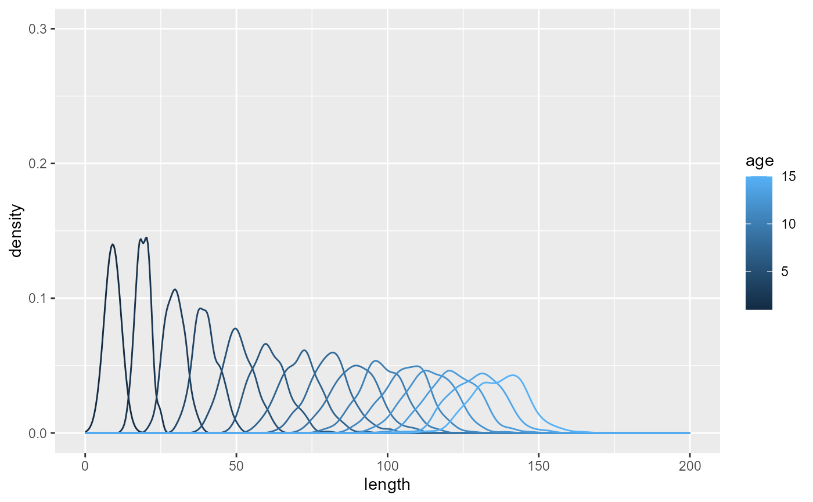
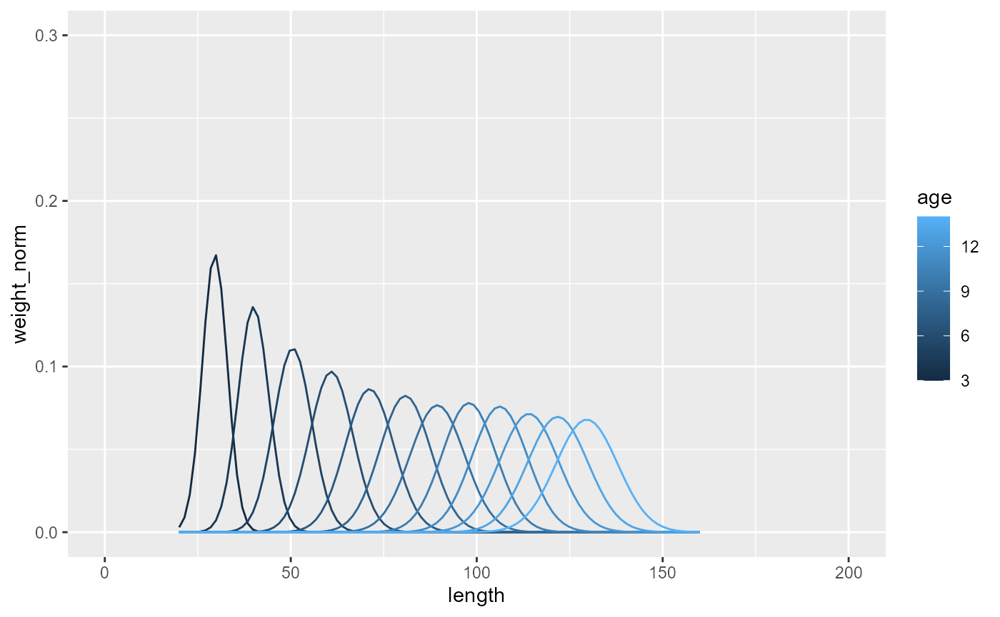
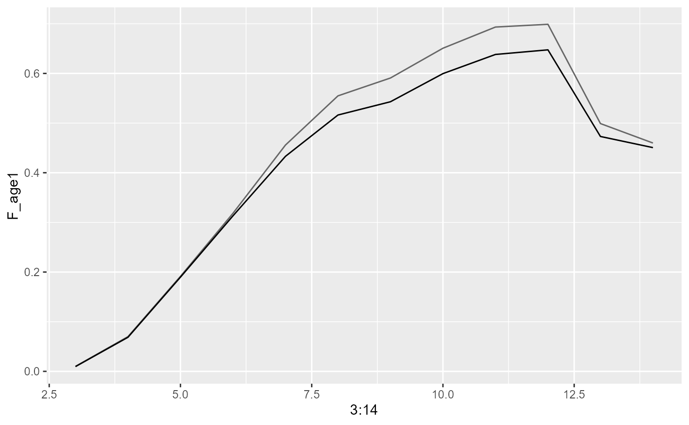
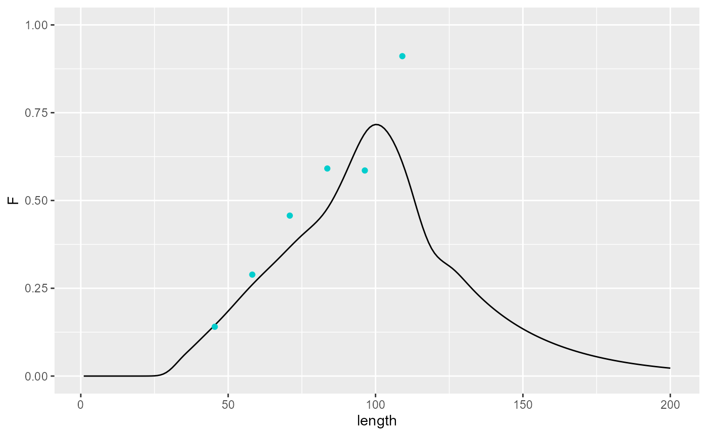
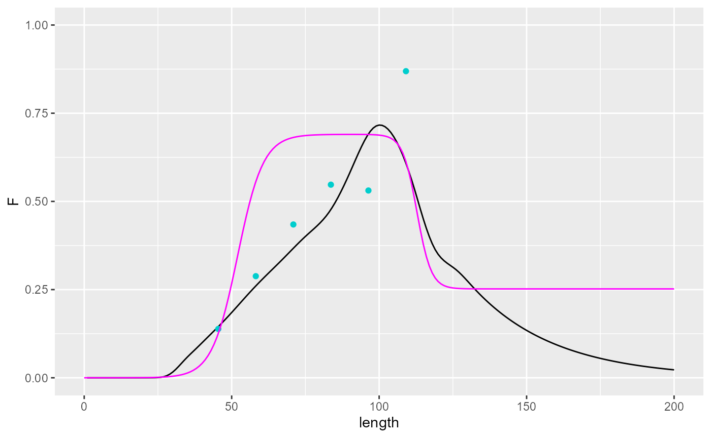
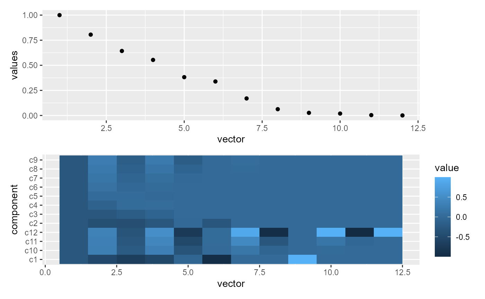
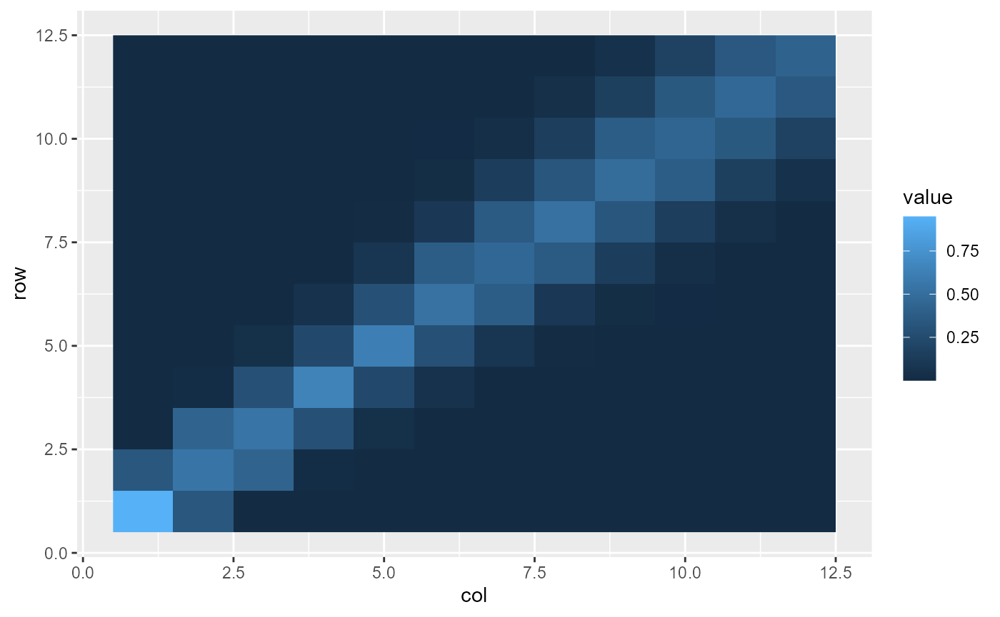

Calibrating fishing mortality at length
Jaideep Joshi
2026-04-09
calibrate_fishing_mort.RmdCalibration of Fishing Mortality
This document describes the calibration of fishing mortality using the fisheRy package. The analysis includes growth trajectory simulations, weight calculations, and fishing mortality curve fitting.
Growth Trajectories
This section simulates growth trajectories for fish populations under different conditions.
growth_trajectories = function(beta1=NULL, beta2=NULL, N=50, temp_sd = 3, tsb_min = 0, tsb_max=1.93e3, growth_noise_sd = NULL){
names = c("t_birth", "age", "isMature", "isAlive", "length", "weight", "mort", "temp", "fec", "ssb")
dat_full = data.frame(data=matrix(nrow=0, ncol=length(names)))
colnames(dat_full) = names
plot(x=1, y=NA, xlim=c(0,31), ylim=c(0,300), xlab="Age", ylab = "Length")
for (f in 1:N){
fish = new(Fish, params_file)
if (use_empirical_functions) fish$setMortalityCurveEmpirical(here::here("data/naturalmort.spline.csv"))
if (!is.null(growth_noise_sd)) fish$par$growth_noise_sd = growth_noise_sd
if (!is.null(beta1)) fish$par$beta1 = beta1
if (!is.null(beta2)) fish$par$beta2 = beta2
dat = data.frame(data=matrix(nrow=0, ncol=length(names)))
colnames(dat) = names
temp0 = rnorm(1, mean=5.61, sd=temp_sd)
tsb0 = runif(1, min = tsb_min, max = tsb_max)
fish$init(tsb0, temp0)
dat[1,] = c(fish$get_state(), fish$naturalMortalityRate(5.61), 5.61, 0, 0.8*tsb0)
for (i in 2:30){
temp = rnorm(1, mean=5.61, sd=temp_sd)
tsb = runif(1, min = tsb_min, max = tsb_max)
fish$updateMaturity(temp)
fish$grow(tsb, temp)
fish$set_age(fish$age+1)
dat[i,] = c(fish$get_state(), fish$naturalMortalityRate(temp), temp, fish$produceRecruits(0.8*tsb*1e6, temp), 0.8*tsb)
}
points(dat$length~dat$age, type="l", col=scales::alpha(rainbow(N)[f], 0.3))
dat_full = rbind(dat_full, dat)
}
dat_full
}
dat_full3 = growth_trajectories(N=200, temp_sd=0, growth_noise_sd = 0.2347)
Visualization of Growth Trajectories
dat_full3 |>
filter(age <= 15) |>
ggplot(aes(x=length, group=age, color=age))+
geom_density() +
ylim(c(0,0.3))+
xlim(c(0,200))
Weight Calculations
This section calculates weights based on age and length distributions.
length_chars_by_age = dat_full3 |>
filter(age <= 15) |>
group_by(age) |>
summarize(mean_l = mean(length),
sd_l = sd(length))
get_weights = function(nl){
d = expand_grid(age=3:14, length=seq(20,160,length.out=nl)) |>
left_join(length_chars_by_age) |>
rowwise() |>
mutate(weight = purrr::pmap_dbl(list(x=length, mean=mean_l, sd=sd_l), ~dnorm(x=..1, mean=..2, sd=..3)))
wsum = d |>
group_by(age) |>
summarize(wsum = sum(weight))
w = d |>
left_join(wsum) |>
mutate(weight_norm = weight/(wsum+1e-12))
w |>
group_by(age) |>
summarize(wsum = sum(weight), wnorm_sum = sum(weight_norm))
w
}
get_weights(100) |>
ggplot(aes(x=length, y=weight_norm, group=age, col=age))+
geom_line() +
ylim(c(0,0.3))+
xlim(c(0,200))## Joining with `by = join_by(age)`
## Joining with `by = join_by(age)`
Fishing Mortality Calibration
This section calibrates fishing mortality using linear systems and regression.
weights_mat = get_weights(12) |>
select(age, length, weight_norm) |>
pivot_wider(names_from=length, values_from=weight_norm) |>
select(-age) |>
as.matrix()## Joining with `by = join_by(age)`
## Joining with `by = join_by(age)`
F_age1 = read.csv(here::here("data/new_calibration_files/F-AFWG2024.csv")) |>
filter(Year_age >= 2001 & Year_age <= 2020) |>
select(X3:X14) |>
colMeans()
F_age2 = read.csv(here::here("data/F.at.age.csv")) |>
filter(age >=3 & age <=14) |>
pull(F)
tibble(F_age1, F_age2) |>
ggplot(aes(x=3:14)) +
geom_line(aes(y=F_age1), col="grey40")+
geom_line(aes(y=F_age2))
F_length1 = solve(weights_mat, F_age1)
read.csv(here::here("data/selection.spline.reduced.csv")) |>
ggplot() +
geom_line(aes(y=F, x=length)) +
geom_point(data=tibble(f=F_length1, length=as.numeric(names(F_length1))),
aes(x=length, y=f),
col="cyan3")+
ylim(0,1)## Warning: Removed 6 rows containing missing values or values outside the scale range
## (`geom_point()`).
F_length2 = solve(weights_mat, F_age2)
fleet = new(Fleet)
fleet$readParams(params_file_fleet, F)
fleet$set_referenceFishingMortalityCurveLogistic(F1 = 0.6901, F2 = 0.23, F3 = 52, F4 = 0.4151, F5=112.8, F6 = 0.4381674, lmin = 45)
df_logistic = tibble(len=seq(0,200, 1)) |>
mutate(F_logistic = purrr::map_dbl(len, ~fleet$fishingMortality(.x)))
read.csv(here::here("data/selection.spline.reduced.csv")) |>
ggplot() +
geom_line(aes(y=F, x=length)) +
geom_point(data=tibble(f=F_length2, length=as.numeric(names(F_length2))),
aes(x=length, y=f),
col="cyan3") +
geom_line(data=df_logistic, aes(x=len, y=F_logistic), col="magenta") +
ylim(0,1)## Warning: Removed 6 rows containing missing values or values outside the scale range
## (`geom_point()`).
Eigen Analysis
eigs = eigen(weights_mat)
library(patchwork)
p1 = tibble(values = eigs$values,
vector = 1:12) |>
ggplot(aes(x=vector, y=values)) +
geom_point()
p2 = eigs$vectors |>
as.data.frame() |>
setNames(1:12) |>
mutate(component = paste0("c", 1:12)) |>
pivot_longer(-component, names_to = "vector") |>
mutate(vector = as.numeric(vector)) |>
ggplot() +
geom_raster(aes(y=component, x=vector, fill=value))
p1/p2 
weights_mat %*% t(weights_mat) |>
as.data.frame() |>
setNames(1:12) |>
mutate(row = 1:12) |>
pivot_longer(-row, names_to = "col") |>
mutate(col=as.numeric(col)) |>
ggplot() +
geom_raster(aes(y=row, x=col, fill=value))
### BASED ON REGRESSION
# F_age_df = read.csv(here::here("data/new_calibration_files/F-AFWG2024.csv")) |>
# select(Year_age, X3:X14) |>
# pivot_longer(cols = starts_with("X"),
# names_to = "age",
# values_to = "F") |>
# mutate(age = as.numeric(gsub("X","", age)))
# nyears = length(unique(F_age_df$Year_age))
# weights_long = get_weights(12)
# weights_mat = weights_long |>
# select(age, length, weight_norm) |>
# pivot_wider(names_from=length, values_from=weight_norm) |>
# select(-age) |>
# as.matrix()
# res <- list()
# for(t in 1:nyears){
# res[[t]] <- weights_mat
# }
# weights_mat_rep <- do.call("rbind", res)
# fit = lm(F_age_df$F ~ weights_mat_rep-1)
# F_length = coef(fit)
# length_Flength = as.numeric(gsub(pattern = "weights_mat_rep",replacement = "", x = names(coef(fit))))
# read.csv(here::here("data/selection.spline.reduced.csv")) |>
# ggplot() +
# geom_line(aes(y=F, x=length)) +
# geom_point(data=tibble(f=F_length, length=length_Flength),
# aes(x=length, y=f),
# col="red")+
# ylim(0,1)